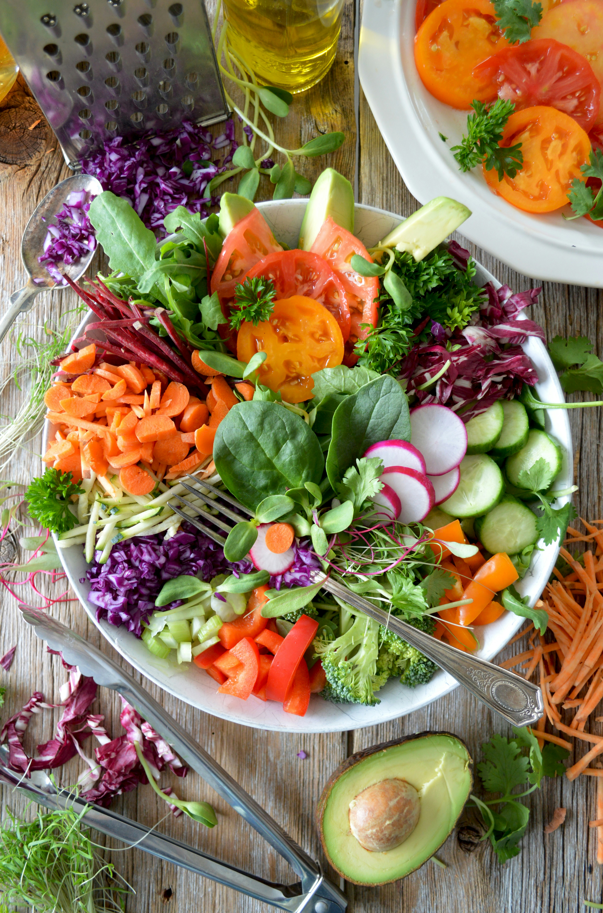

Caeser Salad

Description
Caesar Salad is a classic salad that typically consists of romaine lettuce, croutons, Parmesan cheese, and a
creamy dressing made with anchovies, garlic, lemon juice, egg yolks, and olive oil. It's a refreshing and
flavorful salad that's perfect as a side dish or a light meal.
Ingredients
- Romaine lettuce
- Croutons
- Parmesan cheese
- Anchovies
- Garlic
- Lemon juice
- Egg yolks
- Olive oil
Steps
- Wash and dry the romaine lettuce, then tear it into bite-sized pieces.
- In a small bowl, mash the anchovies and garlic together to form a paste.
- In a separate bowl, whisk together the egg yolks, lemon juice, and olive oil until the dressing is emulsified and creamy. Stir in the anchovy-garlic paste and grated Parmesan cheese.
- In a large salad bowl, toss the romaine lettuce with the dressing until well coated.
- Add croutons on top of the salad for added crunch.
- Serve immediately and enjoy!
Home